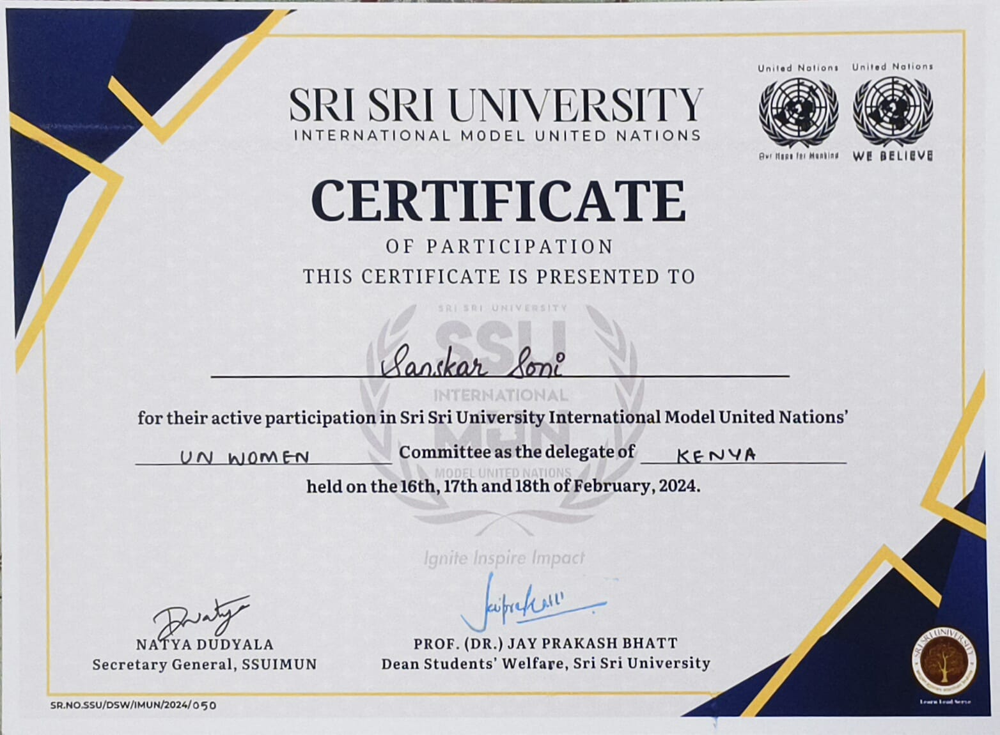

An accomplished and dynamic Project Manager and Service Delivery Coordinator with over 10 years professional
working experience in the IT and Telecommunications industry.
My leadership style focuses on engaging
team members to communicate, dynamically solve problems and deliver the highest quality solutions.
I am well known for my ability to meet, achieve and exceed company and project objectives.
SRI SRI UNIVERSITY
MITHI GOBINDRAM PUBLIC SCHOOL
Orion Fest/2022
I oversaw the inter-college competition for lawn
tennis as the point of contact and event coordinator.
I
managed the sponsorship duties and participants
management, communication, and leadership skills
through this experience.
COLLEGETIPS.IN
SUMMER INTERSHIP PROGRAM 2023
HUMAN RESOURCE INTERNSHIP
SEP 2023- PRESENT

SSUIMUN
Double the Challenge, Double the Impact:- Representing Kenya at SSUIMUN 7.0!
As a first-time delegate representing Kenya at SSUIMUN 7.0 of Sri Sri University, I'm buzzing with anticipation. This prestigious conference is a fantastic platform to engage in thought-provoking discussions, collaborate with passionate individuals, and learn from renowned experts on pressing global issues. Ready to soak up every ounce of knowledge, contribute with fresh perspectives, and make the most of this incredible opportunity. Thank you SSU INTERNATIONAL MUN for this amazing opportunity✨🚀
Held on 16th,17th and 18th of February,2024.
